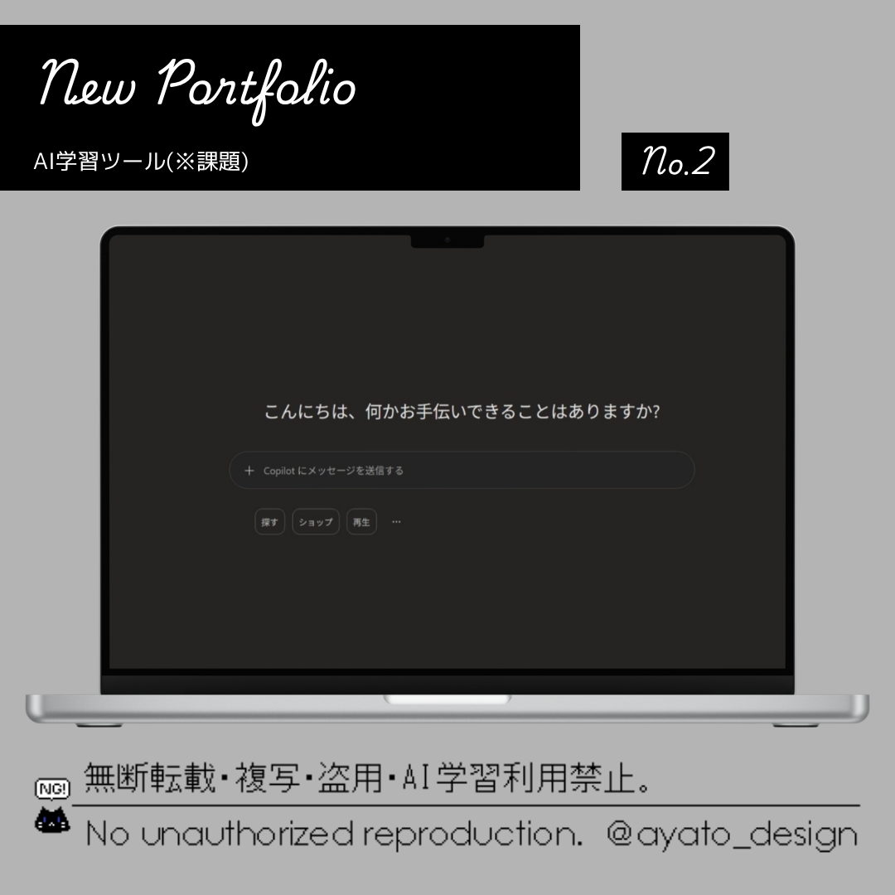
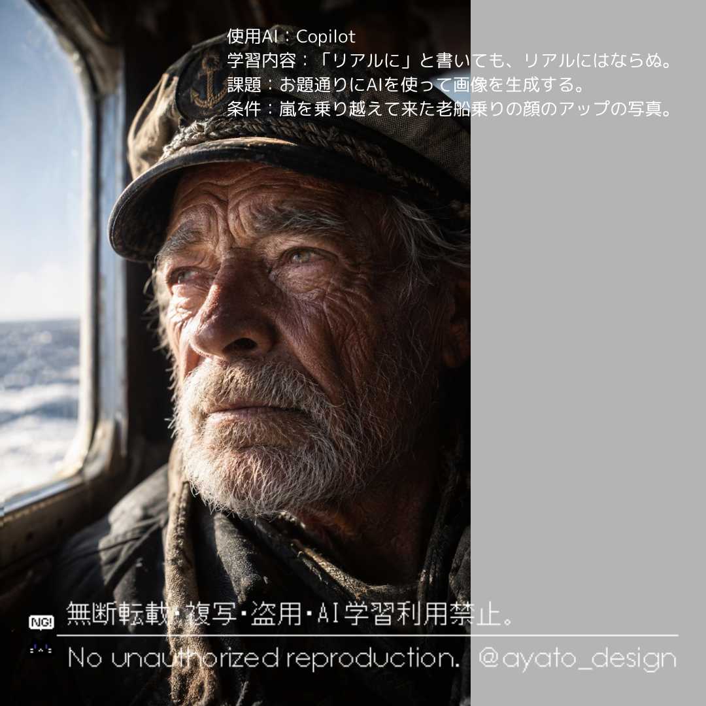
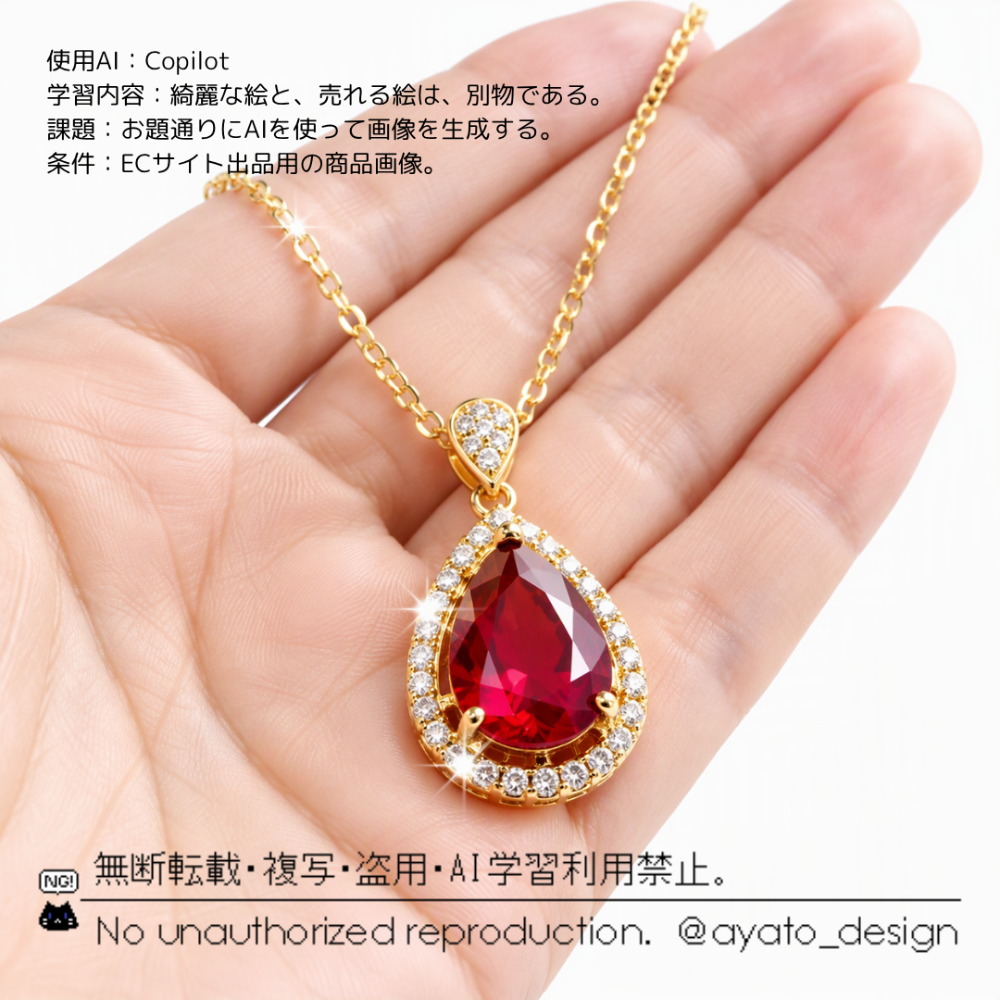
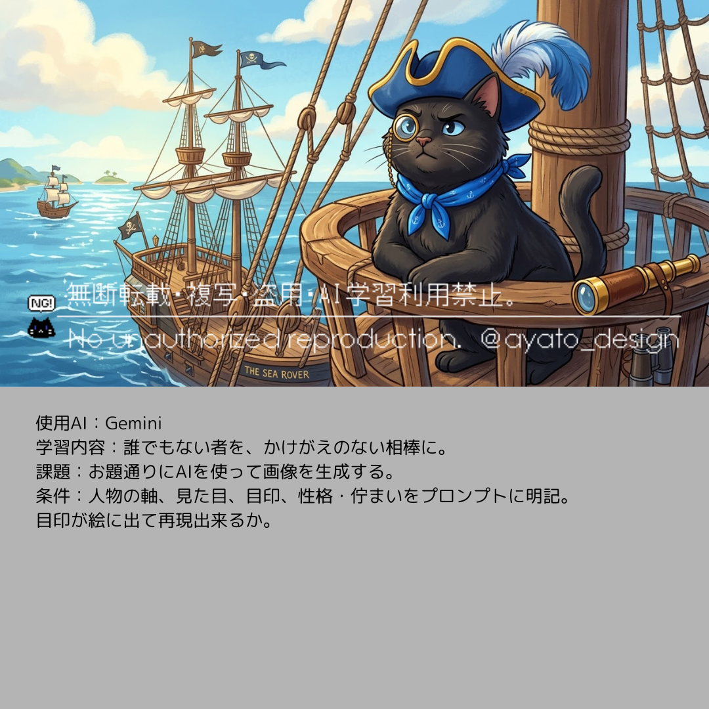
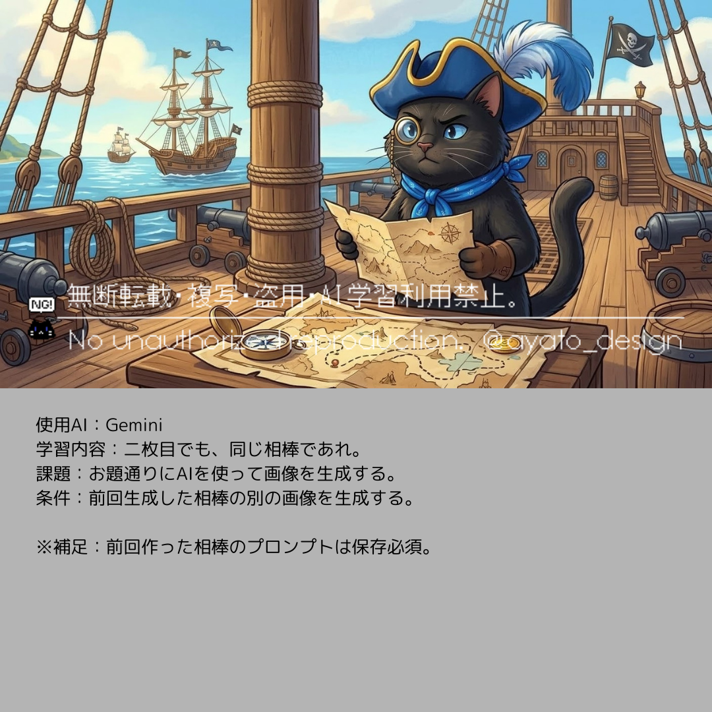
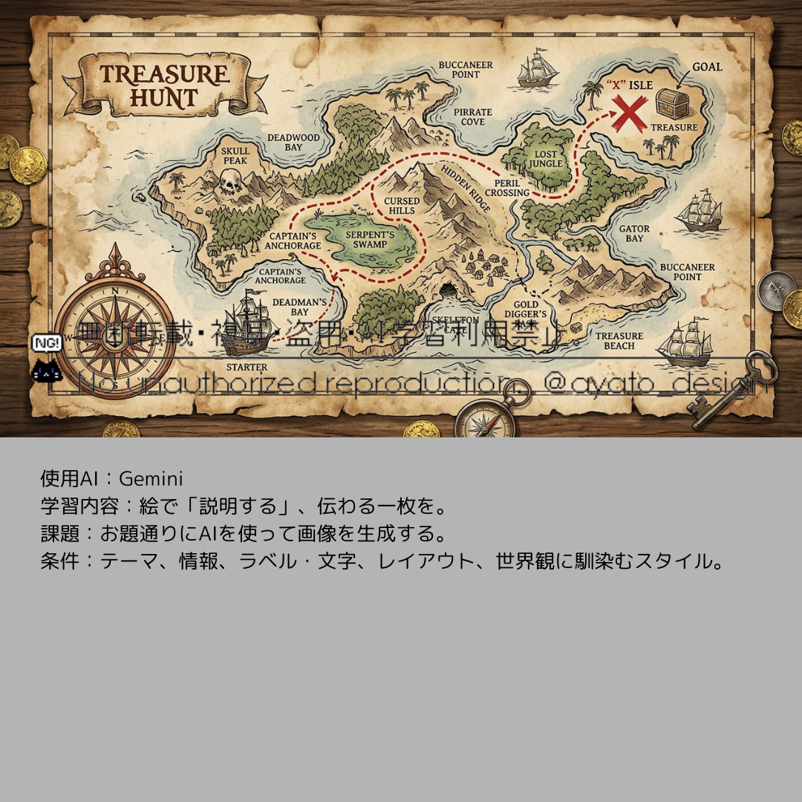
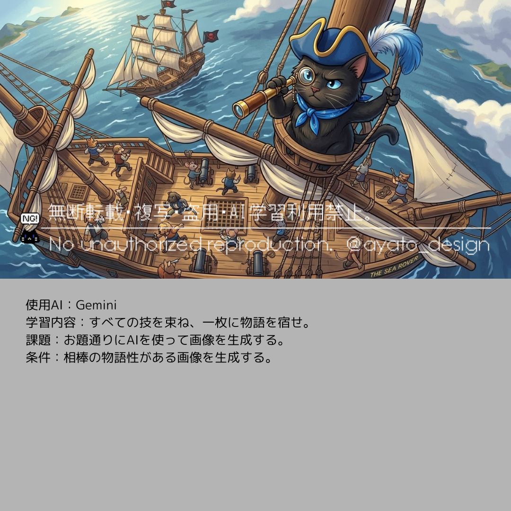

AI学習ツール
Tag
- Selfwork
- Graphic
- AI
スポットバイトのクライアント様から提供頂いたAI学習ツールで製作した課題です。
全10ステージある課題の第2ステージ。
画像生成の中級を学びました。
Stage II - V
- 使用AI：Copilot
- 学習内容：「リアルに」と書いても、リアルにはならぬ。
- 課題：お題通りにAIを使って画像を生成する。
- 条件：嵐を乗り越えて来た老船乗りの顔のアップの写真。
Stage II - VI
- 使用AI：Copilot
- 学習内容：綺麗な絵と、売れる絵は、別物である。
- 課題：お題通りにAIを使って画像を生成する。
- 条件：ECサイト出品用の商品画像。
Stage II - VII
- 使用AI：Gemini
- 学習内容：誰でもない者を、かけがえのない相棒に。
- 課題：お題通りにAIを使って画像を生成する。
- 条件：人物の軸、見た目、目印、性格・佇まいをプロンプトに明記。
目印が絵に出て再現出来るか。
Stage II - VIII
- 使用AI：Gemini
- 学習内容：二枚目でも、同じ相棒であれ。
- 課題：お題通りにAIを使って画像を3枚生成する。
- 条件：前回生成した相棒の別の画像を生成する。
- ※補足：前回作った相棒のプロンプトは保存必須。
Stage II - IX
- 使用AI：Gemini
- 学習内容：絵で「説明する」、伝わる一枚を。
- 課題：お題通りにAIを使って画像を生成する。
- 条件：テーマ、情報、ラベル・文字、レイアウト、世界観に馴染むスタイル。
Stage II - X
- 使用AI：Gemini
- 学習内容：すべての技を束ね、一枚に物語を宿せ。
- 課題：お題通りにAIを使って画像を生成する。
- 条件：相棒の物語性がある画像を生成する。
制作時間：各約5～15分
制作ツール：Copilot/Gemini
学習期間：2026.11.12 - 11.16